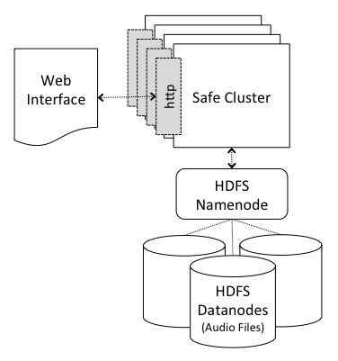
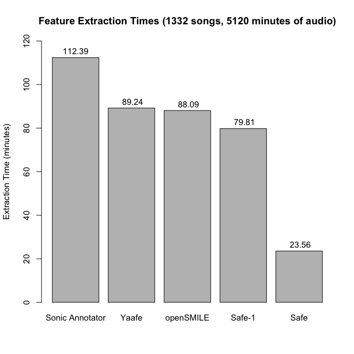
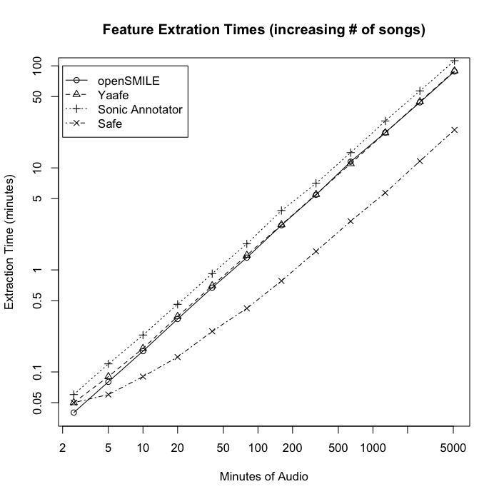
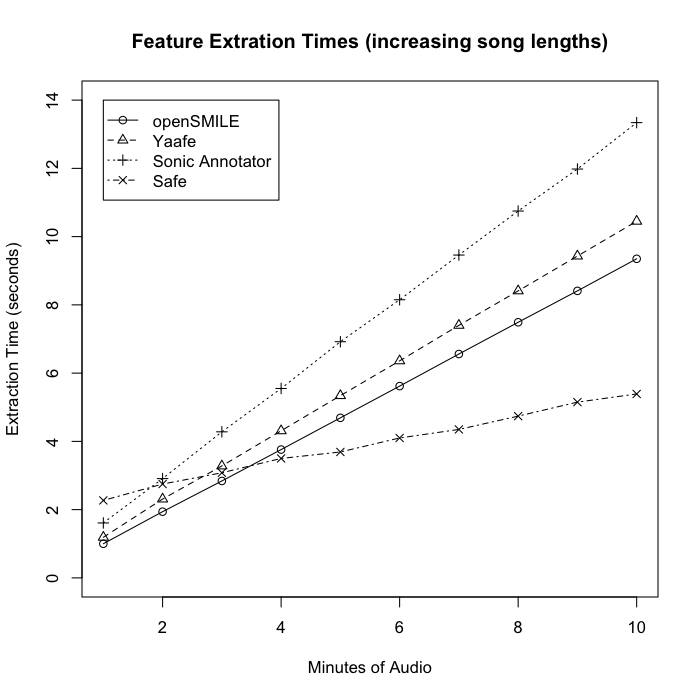
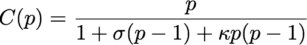
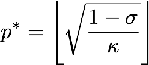
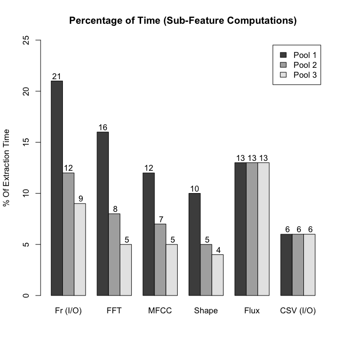
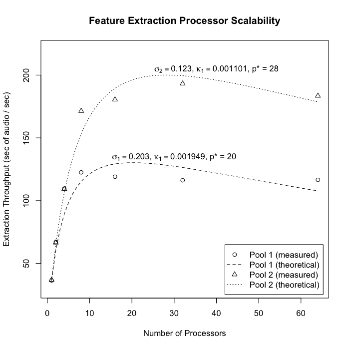
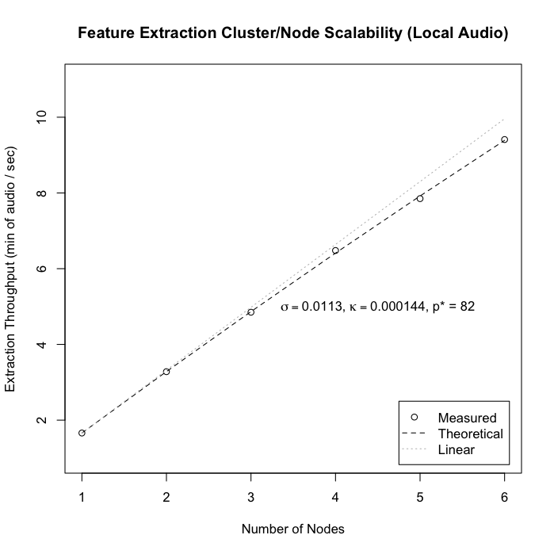

Scalable Audio Feature Extraction
A Thesis Presented to the Faculty of
University of Colorado at Colorado Springs
Department of Computer Science
Adviser: Dr. Rory Lewis
Devon Bryant, April 2014
Background
- Music Information Retrieval (MIR)
- Recommendation systems
- Classification
- Identification
- Automatic transcription
- Similarity searching
- etc.
- Audio Feature Extraction (AFE) - Algorithms ranging from low-level DSP to high-level machine learning.
Related Work
- Marsyas1 - Efficient C++ library with a long history.
- Yaafe - Fast & efficient C++/Python library.
- jAudio1 - Java framework for MIR researchers.
- LibXtract - Optimized C algorithms for AFE.
- Sonic Annotator - Bulk extraction based on VAMP plugins.
- iSoundMW - Distributed AFE and similarity search engine.
- MIRtoolbox2 - Matlab library for MIR algorithms.
- openSMILE2 - C++ library for real-time Speech and MIR.
1 Extensions for distributed computing through existing research
2 Support for multi-threaded/parallel extraction
How do existing systems address these problems?
- Dataflow analysis, eliminate redundant computations
- Optimized algorithms and performant languages
- Distirubuted computing
What issues do current approaches have?
- Parallel computing & vertical scalability
- Imperative techniques are difficult to transition
- Master/worker distribution models
- Single point of failure
- Single point bottlenecks
Research Description
- Extend and adapt existing MIR techniques & algorithms
- Functional, asynchronous and reactive
- Based on Scala and Akka
- Primary focus
- Algorithmic Efficiency
- Parallel Computing
- Distributed Computing
Efficient Feature Extraction
- Features are described by a dataflow sequence of smaller computational steps (sub-features).
- Extraction Plans form directed acyclic dataflow graphs, eliminating redundant calculations 1.
1 Technique based on Yaafe and jAudio
Parallel Feature Extraction
Different levels of parallelism
- File Level - Concurrent extraction on multiple files
- Plan Level - Separate plan paths run concurrently
- Feature Level - Sub-features can run concurrently on separate sections (frames) of audio data
Plan Level Parallelism
| Proc \ Time |
|
|
|
|
FFT(window1) |
Magnitude(fft1) |
MFCC(mag1) |
|
|
CQT(fft1) |
Spec Shape(mag1) |
Note: These tables are used for illustrative purposes of where parallelism can occur. They do not represent the actual thread scheduling or timing within the system.
Feature Level Parallelism
| Proc \ Time |
|
|
|
|
|
fr1 |
Window(fr1) |
FFT(win1) |
CQT(fft1) |
|
|
fr2 |
Window(fr2) |
FFT(win2) |
|
|
|
fr3 |
Window(fr3) |
|
|
|
|
fr4 |
Note: These tables are used for illustrative purposes of where parallelism can occur. They do not represent the actual thread scheduling or timing within the system.
Actor Model
- Extraction plans are encoded in Actor hierarchies
- Common messaging types
- Splitter* - Splits the work into smaller pieces (Files, Frames, etc.) for downstream processing
- Transform* - Most common type, providing simple mapping functions (Windowing, FFT, etc.)
- Resequencer - Takes a stream of potentially unordered messages and sends them out in order (CSV output, etc.)
- Aggregator - Run calculations across multiple frames (Spectral Flux, etc.)
* Can be pooled with a round-robin routing strategy for highly concurrent systems
Distributed Feature Extraction
- Based on Akka clustering
- Decentralized and masterless
- Distribution Setup
- Localized Data
- Distributed Data
Local Data Setup
- Audio files are evenly distributed across the cluster (local file system)
- Extraction message is broadcast to all nodes
- Overall time is limited by the slowest node
- Not fault-tolerant or flexible
Distributed Data Setup
- Audio files stored in Hadoop Distributed File System (HDFS)
- Fault-tolerance through replication
- Route extraction of individual files to different nodes
Distributed System Deployment

Evaluation Dataset
- 1332 songs, 5120 minutes (over 85 hours) of audio
- CD-Quality 44.1 KHz 16-bit stereo WAV format
Data Subset Statistics
| Files |
Total |
Max |
Min |
Avg |
1 |
2.5 |
2.5 |
2.5 |
2.5 |
2 |
5 |
2.5 |
2.5 |
2.5 |
4 |
10 |
3.49 |
1.51 |
2.5 |
9 |
20 |
4.04 |
1.09 |
2.22 |
17 |
40 |
4.56 |
0.92 |
2.35 |
35 |
80 |
4.56 |
0.59 |
2.29 |
61 |
160 |
5.91 |
0.59 |
2.62 |
107 |
320 |
6.98 |
0.41 |
2.99 |
200 |
640 |
11.35 |
0.41 |
3.2 |
371 |
1280 |
11.35 |
0.41 |
3.45 |
707 |
2560 |
15.72 |
0.23 |
3.62 |
1332 |
5120 |
32.25 |
0.11 |
3.84 |
System Evaluation
- Feature Set:
- Mel-Frequency Cepstral Coefficients (13 coeff, 40 filters)
- Spectral Flux
- Spectral Shape (Centroid, Spread, Skewness, and Kurtosis)
- Libraries:
- Yaafe (version 0.64)
- openSMILE (version 2.0-rc1)
- Sonic Annotator (version 1.0)
- Safe (version 0.1)
System: Mac OS X 10.7.5, 2.5 GHz Intel Core i7 processor, 8 GB 1333 MHz DDR3 RAM
Benchmark Comparisons (1)

Benchmark Comparisons (2)

Benchmark Comparisons (3)

Scalability Analysis
Universal Scalability Law

- Contention σ - Serial fraction of total execution
- Coherency κ - Inter-processor communication and overhead
Maximum Capacity

System Hardware
UCCS Research Cluster (VMWare vSphere 5 hypervisor)
- 8 HP machines w/ 2.4GHz Intel Xeon E5530 CPUs
- 64 Processor Cores
- 153 GHz total CPU
- 512 GB Memory
- 55 TB Connected Storage
All virtual machines running 64-bit CentOS 6.4 OS
Theoretical Processor Scalability
Actor Model = Simple scalability estimates

σ1 ≈ 0.21, σ2 ≈ 0.13
Processor Scalability

Cluster/Node Scalability (Local Audio)

Cluster/Node Scalability (HDFS)
Conclusions
- Dataflow analysis for efficient feature extraction
- Actor models for scalable feature extraction
- Outperformed existing solutions in comparison benchmarks
- Theoretical models for multi-processor and multi-node cluster scalability
Future Work
- Reduce aggregation bottlenecks w/ consistent hashing router
- Inhomogeneous clusters & probablistic load balancing
- Additional fault-tolerance